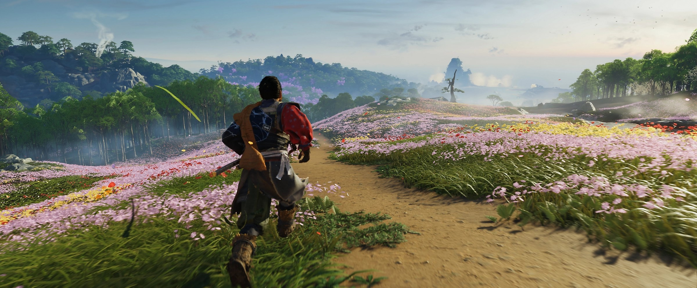
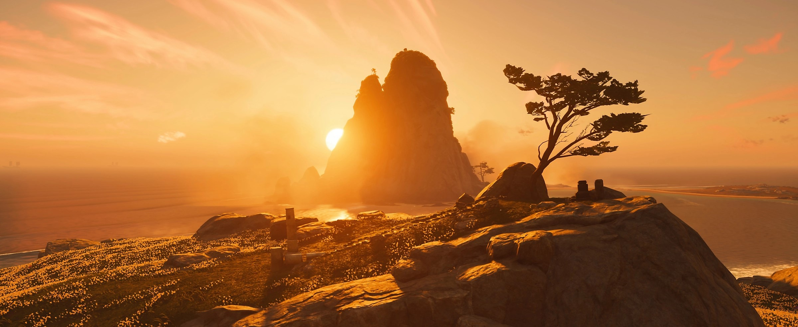
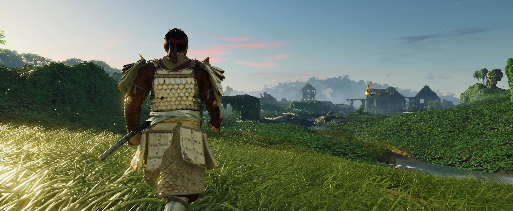
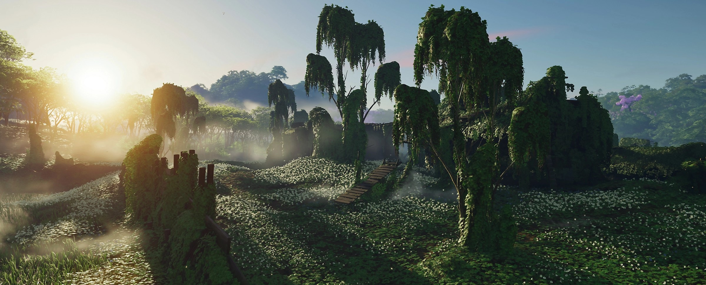
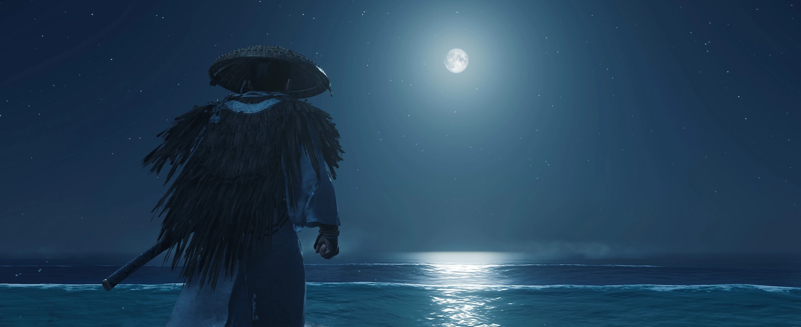
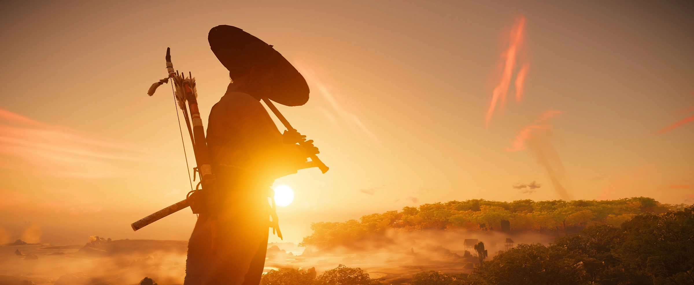
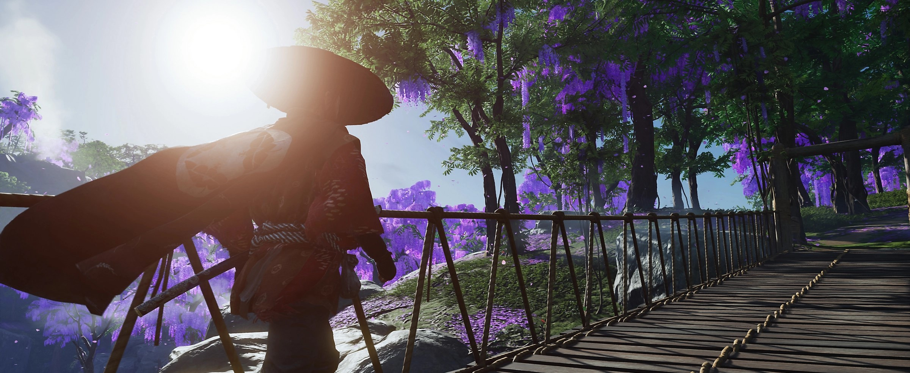
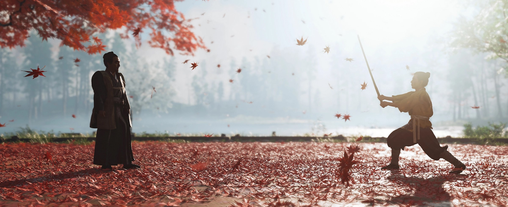
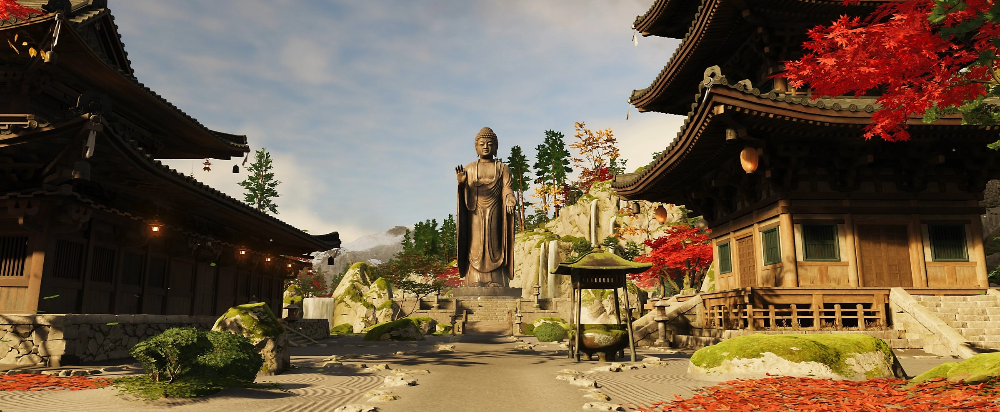
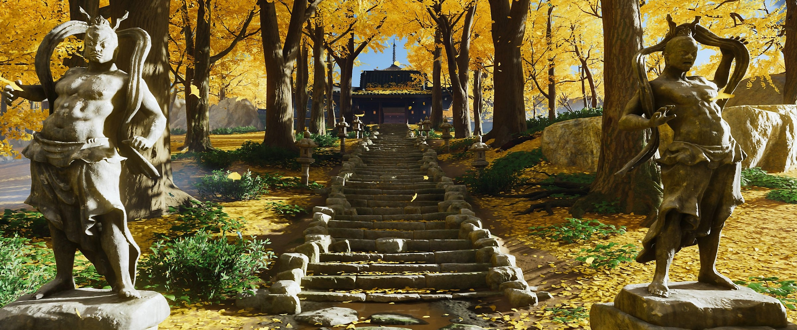

전장을 넘어, 지금까지 경험하지 못한 봉건 시대 일본을 경험하세요.이 오픈월드 액션 어드벤처에서 당신은 넓은 초원과 거대한 지형을 탐험하고, 다양한 캐릭터와 조우하며 고대의 주요 징소를 찾고,쓰시마의 숨겨진 아름다움을 발견합니다. 풍성한 논과 밭부터 평화로운 신사와 고대의 숲, 마을과 삭막한 산맥까지,섬에서 살아가는 다양한 생명을 세밀하게 제작한 지역을 탐험하세요.조화로운 자연이 선사하는 정적에서 평화를 찾고,긴 여정 중 만나는 사람들과 함께하는 시간에서 평안을 찾으세요.
진은 사무라이의 방식을 배우며 자랐습니다.그리고 사무라이가 몽골군에 패하자, 그의 세상은 부서집니다. 진은 가장 어려운 선택을 할 수밖에 없습니다.사무라이 정신에 기반한 명예와 전통을 유지하며 승리할 수 없는 전쟁을 할지,아니면 사무라이의 길에서 벗어나 수단과 방법을 가리지 않고 섬과 주민을 보호할지 결정을 내려야만 합니다. 쓰시마를 되찾기 위한 여정에서 진은 오랜 친구들,그리고 새로운 동료들의 도움과 안내를 받습니다. 그는 전통을 벗어내고 새로운 방식의 전사가 되어 남아있는 고향과 주민을 수호해야 합니다.
병사들은 예측불가능하며, 전쟁과 무기에 익숙합니다.새로운 능력과 전략을 습득하며 전쟁을 유리하게 끌어가고, 섬과 섬의 주민들을 보호하세요. 카타나로 적과 정면으로 승부하며 독특하고 몰입감 넘치는 사무라이 전투 경험을 만끽하세요.활을 마스터하여 치명적인 정밀함으로 원거리 위협을 처리하세요.은신과 속임수 전략을 개발하여 적을 혼란에 빠뜨리고 암습하세요. 쓰시마의 독특한 지형과 환경은 기술, 무기, 전략을 다양하게 혼합하여나만의 플레이스타일에 적합한 조합을 찾기에 최적의 장소입니다.진의 이야기를 따라가는 동안, 유연성과 창의성이야말로 최고의 무기가 될 것입니다.
In the year 1274, the fearsome Mongol Empire invades the island of Tsushima,
wreaking havoc and conquering the local population.
As one of the last surviving samurai,
you rise from the ashes and move beyond your traditions
to forge a new way of fighting—the way of the Ghost—as you wage an
unconventional war for the freedom of Japan.